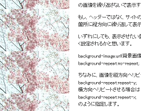

背景画像を使ってＨＰのデザインをCSSで変更
デザインを変更する場合は、ヘッダーやホームページの背景に写真画像をとりいれてカスタマイズすると印象も変わってきます。
インターネット上で配布されている無料画像やアイコン素材を探してきて、ホームページの背景画像に設定してみるとよいでしょう。
例えば、さくらの無料画像を拾ってきて、CSSで当サイトのヘッダー部分の背景に設定するとこのページのようになります。
このページの場合は文字と画像がかぶってしまうため、画像素材にグラデーションをかけておりますが、ある程度の空白スペースのあるものを選択してテキストとかぶらないようにするとよいでしょう。
もし、文字と画像がかぶって見にくくなってしまう場合は、Photoshopや無料のGIMPなどの画像処理ツールを使用して、グラデーションをかけてみるとよいでしょう。
タイトルバナーやロゴ画像の作り方
スタイルシートへの背景画像の設定方法
このページのデザインを指定しているスタイルシートはこのような感じで作成しています。
https://www.homepage-tukurikata.com/sample.css
さくらの画像やレイアウトの幅、色彩などはすべてこちらのスタイルシートで指定しているのですが、このファイルで背景画像を指定しているのはこの箇所です。
#header {
background-image:url("https://www.homepage-tukurikata.com/image/sample-sakura.jpg");
background-repeat:no-repeat;
}
当サイトでは、この#headerの箇所がヘッダー部分にあたるのですが、そのヘッダー部分の背景画像に
https://www.homepage-tukurikata.com/image/sample-sakura.jpg
の画像を繰り返さないで表示するという意味になります。
もし、ヘッダーではなく、サイトの背景の部分に設定するとしたら、bodyの箇所に縦方向に繰り返して表示させる設定にするよいでしょう。

いずれにしても、表示させたい箇所のCSSに、次のような記述をするとうまく設定されるかと思います。
background-image:url("画像のurl");
background-repeat:no-repeat;
スタイルシートへの記述方法の詳細はこちらのページをご参照ください。
→ 背景の指定をするCSS - background
画像素材をリピートさせる場合
画像を縦方向へリピートさせる場合は
background-repeat:repeat-y;
横方向へリピートさせる場合は
background-repeat:repeat-x;
のように指定します。
また、
background-repeat:repeat;
を指定した場合は、縦と横のすべてに敷き詰めるという設定になります。
このページの例でいいますと、ヘッダーのさくらの画像はリピートさせずに固定させておりますが、背景画像については、こちらのグレーの素材を横方向にリピートさせて設定しております。
body {
background-image:url("https://www.homepage-tukurikata.com/image/bg-gray.png");
background-repeat:repeat-x;
}
大き目の画像を使用してリピートせずに使用したり、小さ目の素材を縦や横方向にリピートして使用するとよいでしょう。